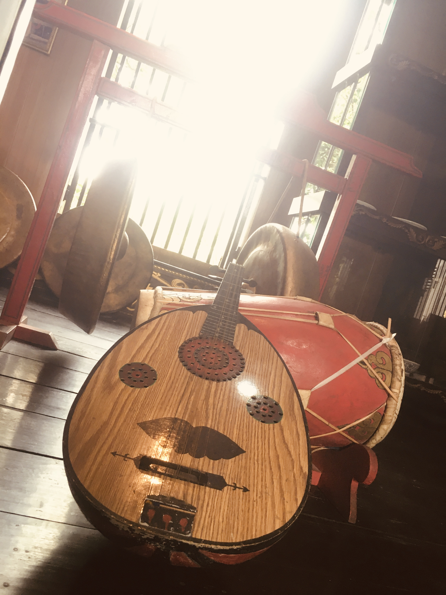
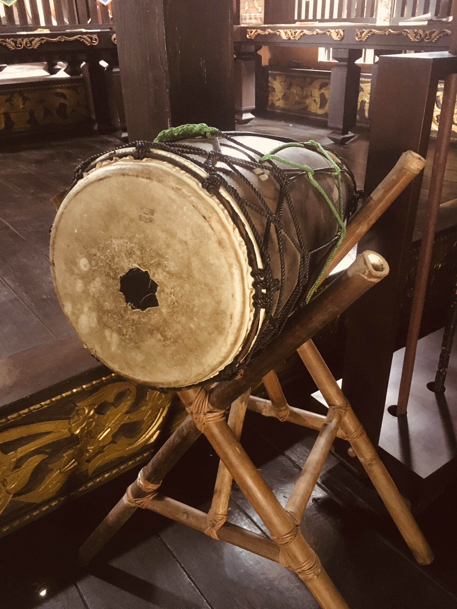
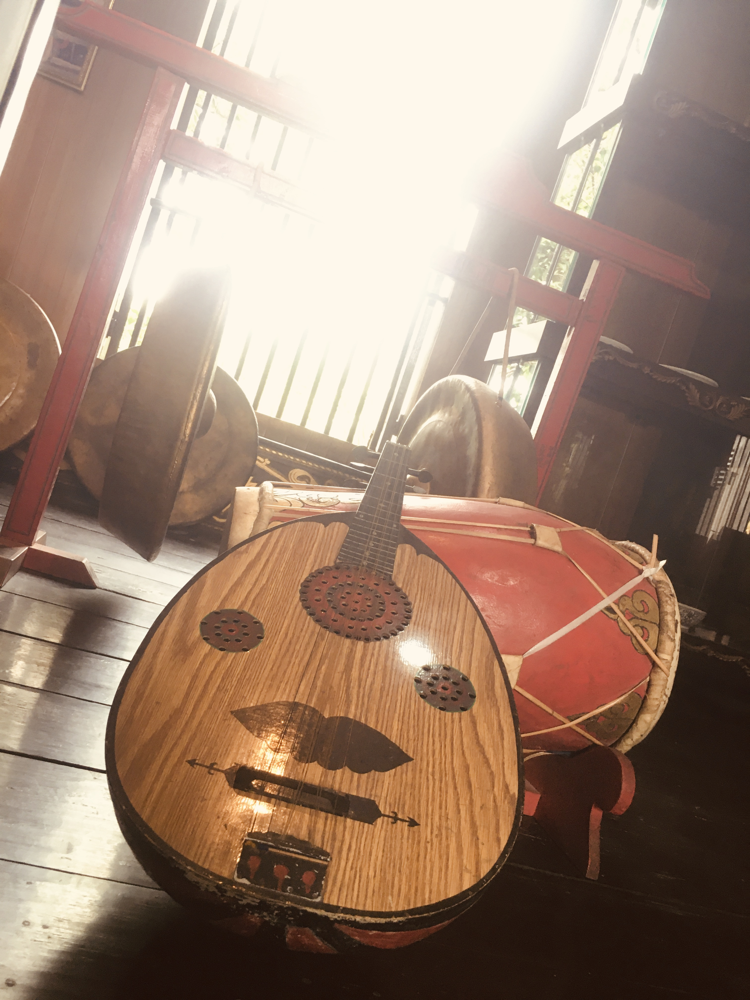
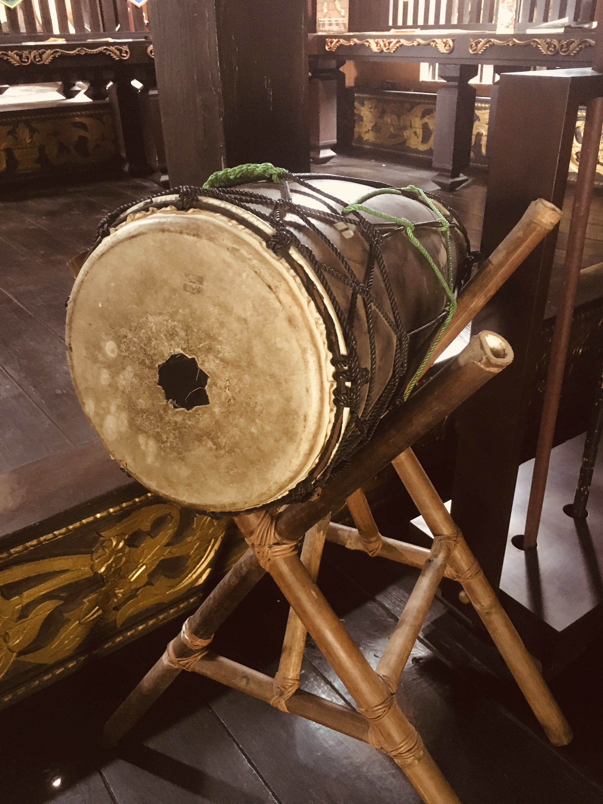

Anjungan Kalimantan Selatan
Jalan-jalan ke Anjungan Kalimantan Selatan rasanya seperti diajak masuk ke dunia yang berbeda. Yang pertama kali bikin takjub adalah Rumah Bubungan Tinggi yang berdiri dengan gagahnya. Atapnya yang runcing menjulang tinggi itu bukan cuma biar kelihatan keren aja, tapi ternyata punya makna yang dalam banget. Kata pemandu di sana, bentuk atap yang disebut bubungan ini melambangkan kedekatan kita sama Yang Maha Kuasa - kayak mengingatkan kita bahwa hidup ini selalu ada yang mengawasi dari atas.
Yang bikin makin kagum adalah ukiran-ukiran di pilar kayunya. Detail banget! Ada motif bunga teratai, kangkung, sampai burung enggang yang digambar dengan indahnya. Setiap ukiran punya cerita tersendiri tentang kehidupan masyarakat Banjar. Terus ada tangga di depan yang namanya janjang sambutan - dari namanya aja udah keliatan ya kalau masyarakat Banjar itu orangnya ramah dan suka menyambut tamu dengan hangat. Warna-warnanya juga eye-catching banget! Kuning, hijau, merah yang cerah - katanya sih ini warna-warna kerajaan dulu yang bikin rumah ini kelihatan mewah dan berwibawa. Ternyata rumah ini bukan sembarangan rumah. Dulu, sekitar abad ke-16, ini adalah tempat tinggal para bangsawan Kesultanan Banjar. Desainnya campuran dari arsitektur Jawa (Majapahit) dan Melayu, tapi disesuaikan sama iklim Kalimantan yang lembap.
Yang menarik lagi, tata ruangnya ada aturannya. Ada ruang palimasan buat keluarga inti, ruang paluaran buat terima tamu. Jadi keliatan deh kalau dulu ada tata krama dan hierarki sosial yang jelas dalam masyarakat Banjar. Anjungan ini dibangun tahun 1975 sebagai bagian dari proyek Bu Tien Soeharto untuk melestarikan budaya Indonesia. Sekarang jadi tempat yang penting banget buat kita belajar dan menghargai warisan nenek moyang. Rasanya sedih kalau sampai generasi sekarang gak tau lagi tentang kekayaan budaya kayak gini.
1) Asal-Usul Arsitektur: Rumah Bubungan Tinggi awalnya adalah rumah aristokrat Kesultanan Banjar (abad ke-16). Desainnya dipengaruhi oleh arsitektur Jawa (Majapahit) dan Melayu, dengan adaptasi iklim tropis basah Kalimantan.
2) Filosofi: Bubungan tinggi melambangkan hubungan manusia dengan alam dan Tuhan. Ruangan dibagi berdasarkan hierarki sosial, seperti Palimasan (ruang keluarga) dan Paluaran (ruang tamu).
3) TMII & Pelestarian: Anjungan dibangun tahun 1975 sebagai bagian dari proyek nasional Ibu Tien Soeharto untuk memamerkan keanekaragaman budaya Indonesia. Kalsel dipilih karena perannya sebagai pusat budaya Borneo yang berpadu dengan Islam.

 


